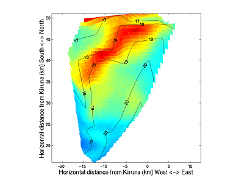

Stereoscopic triangulation
1 Introduction
Provided that there exist 2 images of the same object, most likely clouds, taken from two locations it is possible to determine the distance to various features that appear in both images. Thus it is also possible to determine the altitude of the features identified. This is provided that the optical characteristics and the rotations of the cameras are well known. Another thing that need to be sufficiently well determined are the locations of the imaging sites - at least their relative positions.
Currently it is possible to analyze images made with optics that are described by any of the following optical transfer functions:
- Pinhole camera model
Where - NIPR camera model
Where - ALIS camera model
Where - Kiruna all-sky camera model
With a slightly more complex function that relates the direction in space to the position ( x, y) in the image. - Pinhole camera with half spherical backside
Where
Where theta is the angle relative to the polar axis and f is the focal width.
For the ALIS camera model alfa is a weighting parameter.

2 Working procedure

With images from two sites of the same object as in figure 1 and figure 2 above the working procedure is:
- A cross-hair appears in fig 1.
- Identify a feature that appears in both images press the left mouse button with the cross-hair above the feature.
- A cross-hair appears in fig 2,
- Identify the same feature in this image press the left mouse button with the cross-hair above the feature. If the feature seems to have disappeared or if you get second thoughts about the identification, then this is the time to press the right mouse button to skip this point for now.
- Then the line of sight vectors is determined for the identified pixels .
-
The middle point on the shortest line connecting the two lines
specified by the camera positions and the lines of sight is taken
the "true" point in space of the identified feature.

- The distance of the shortest connection is given as a quality measure of the identification. If the distance is far too long it seems likely that the identification are somewhat doubtful and the user can skip the point.
Repeat this procedure 1-7 until there are no more common features or You are satisfied, then press the middle mouse button.
The set of points that are identified . can be viewed on as a set of sample points from a surface. Over this set of irregularly samples a Deluanay triangulation is made to get a regularly spaced surface grid.
4 Results

The resulting altitude maps and the part of the images
that are enclosed by identified points is plotted in the two
image windows. The results are stored in file if the user
so wishes. The triangulated surface is returned to the
matlab workspace in the variables:
x
y
z
and the plots can later on be reproduced with the command sequence:
bxy1 = size(currmatr1);
bx1 = bxy1(1);
by1 = bxy1(2);
xi = 1:10:bx1;
yi = 1:10:by1;
cm1 = currmatr1(xi,yi);
[xi,yi] = meshgrid(xi,yi);
xii = 1:bx1;
yii = 1:by1;
[xii,yii] = meshgrid(xii,yii);
pcolor(x,y,cm1),shading 'flat'
hold on
[cs,h] = contour(x,y,z,'g');
axis('equal')
xlabel('Horizontal distance from Kiruna (km) West <-> East')
ylabel('Horizontal distance from Kiruna (km) South <-> North')
clabel(cs,h)
drawnow
Notes
Sometimes it is decidedly difficult to identify an object seen from two sites when the scattering angle from the sun is quiet different - as in the case showed here, where in the image from Kiruna (left) the light is scattered almost 180 degrees while in the other image the scattering angle is something like 30 degrees.